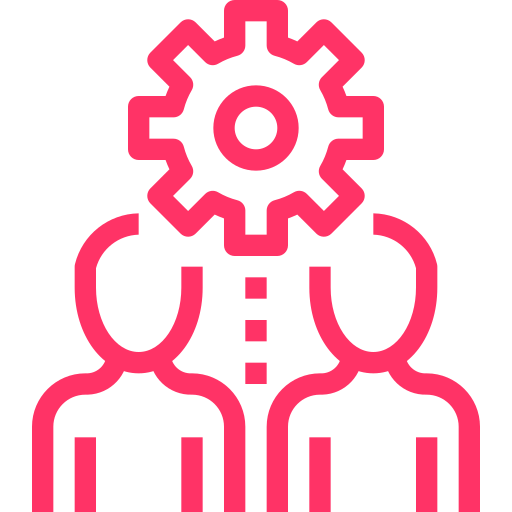

<mat-sidenav-container class="sidenav-container">
  <mat-sidenav #drawer class="sidenav" fixedInViewport="true"
    [attr.role]="(isHandset$ | async) ? 'dialog' : 'navigation'" [mode]="(isHandset$ | async) ? 'over' : 'side'"
    [opened]="!(isHandset$ | async)">
    <mat-toolbar class="logo">
      

    </mat-toolbar>
    <!-- <mat-nav-list class="anchor_link">
      <a routerLinkActive="active" mat-list-item routerLink="/home/dashboard">
         Dashboard
      </a>
      <a mat-list-item routerLink="/home/bookings" routerLinkActive="active">
        Settings
      </a>
      <a mat-list-item routerLink="/home/calendar" routerLinkActive="active">
        Calendar
      </a>
      <a mat-list-item routerLink="/home/bookings" routerLinkActive="active">
        Hr & Payroll
      </a>
      <a mat-list-item routerLink="/home/bookings" routerLinkActive="active">
        Class Rooms
      </a>
      <a mat-list-item routerLink="/home/bookings" routerLinkActive="active">
        Management
      </a>
      <a mat-list-item routerLink="/home/bookings" routerLinkActive="active">
        Schools
      </a>
    </mat-nav-list> -->
    <mat-nav-list class="anchor_link">
      <div *ngFor="let menuGroup of menuList">
        <div *ngIf="menuGroup.menus.length == 0">
          <a mat-list-item class="line" routerLinkActive="active" [routerLink]="['/'+menuGroup.group.route]">
             <span>{{ menuGroup.group.name  }}</span>
          </a>
        </div>
        <div *ngIf="menuGroup.menus.length > 0"
          [ngClass]="{'group-menu-selected': menuGroupSelected==menuGroup.group.route}">
          <a mat-list-item class="line" (click)="selectMenu(menuGroup.group)">
            <mat-icon>{{menuGroupSelected==menuGroup.group.route? 'keyboard_arrow_down': 'keyboard_arrow_right'}}
            </mat-icon>
            <span>{{ menuGroup.group.name }}</span>
          </a>
          <div *ngIf="menuGroupSelected==menuGroup.group.route">
            <a *ngFor="let menu of menuGroup.menus" mat-list-item class="line" routerLinkActive="active"
              [routerLink]="['/'+menuGroup.group.route+'/'+menu.route]">
              <span>{{ menu.name }}</span>
            </a>
          </div>
        </div>
      </div>
    </mat-nav-list>
  </mat-sidenav>
  <mat-sidenav-content class="content_container">
    <mat-toolbar class="header_cont">
      <button type="button" aria-label="Toggle sidenav" mat-icon-button (click)="drawer.toggle()">
        <mat-icon aria-label="Side nav toggle icon">menu</mat-icon>
      </button>
      <div class="row">

      </div>
      <div class="notify_block">
        <div class="email_img">
          
        </div>
        <div class="notify_img">
          
        </div>
        <div class="email_img">
          
        </div>
      </div>
      <div class="menu_block">
        <mat-menu #alertMenu="matMenu">
          <p mat-menu-item>Alert 1</p>
          <p mat-menu-item>Alert 1</p>
        </mat-menu>
        <mat-menu #emailMenu="matMenu">
          <p mat-menu-item>Mail from someonw</p>
          <p mat-menu-item>Mail from someonw</p>
        </mat-menu>
        <mat-menu #signOut="matMenu">
          <div class="signout_menu">
            <p mat-menu-item>Signout</p>
            <p mat-menu-item>Profile</p>
          </div>
        </mat-menu>
      </div>
    </mat-toolbar>
    <router-outlet></router-outlet>
  </mat-sidenav-content>
</mat-sidenav-container>

<!-- <mat-sidenav-container class="sidenav-container">
  <mat-sidenav #drawer class="sidenav" fixedInViewport="true"
    [attr.role]="(isHandset$ | async) ? 'dialog' : 'navigation'" [mode]="(isHandset$ | async) ? 'over' : 'side'"
    [opened]="!(isHandset$ | async)">
    <mat-toolbar color="primary">Menu</mat-toolbar>
    <mat-nav-list>
      <div *ngFor="let menuGroup of menuList">
        <div *ngIf="menuGroup.menus.length == 0">
          <a mat-list-item class="line" routerLinkActive="active" [routerLink]="['/'+menuGroup.group.code]">
            <span>{{ menuGroup.group.name  }}</span>
          </a>
        </div>
        <div *ngIf="menuGroup.menus.length > 0"
          [ngClass]="{'group-menu-selected': menuGroupSelected==menuGroup.group.code}">
          <a mat-list-item class="line" (click)="selectMenu(menuGroup.group)">
            <mat-icon>{{menuGroupSelected==menuGroup.group.code? 'keyboard_arrow_down': 'keyboard_arrow_right'}}
            </mat-icon>
            <span>{{ menuGroup.group.name }}</span>
          </a>
          <div *ngIf="menuGroupSelected==menuGroup.group.code">
            <a *ngFor="let menu of menuGroup.menus" mat-list-item class="line" routerLinkActive="active"
              [routerLink]="['/app/'+menuGroup.group.code+'/'+menu.code]">
              <span>{{ menu.name }}</span>
            </a>
          </div>
        </div>
      </div>
    </mat-nav-list>
  </mat-sidenav>
  <mat-sidenav-content>
    <mat-toolbar color="primary">
      <button type="button" aria-label="Toggle sidenav" mat-icon-button (click)="drawer.toggle()"
        *ngIf="isHandset$ | async">
        <mat-icon aria-label="Side nav toggle icon">menu</mat-icon>
      </button>
      <span>ng7-menu-sidenav</span>
    </mat-toolbar>
    <router-outlet></router-outlet>
  </mat-sidenav-content>
</mat-sidenav-container> -->